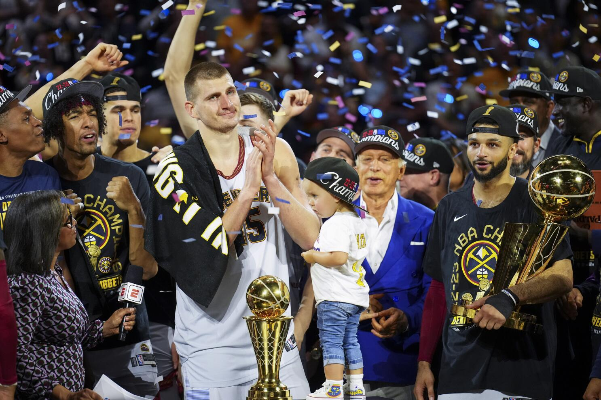
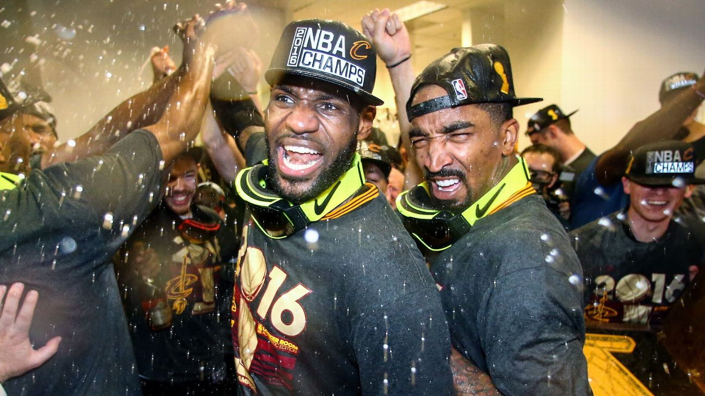

Nba Champions Throughout History
Table Of Contents
Description
Over the past 20 years, the NBA has witnessed a dynamic array of champions that have left an indelible mark on basketball history. From the early 2000s, the Los Angeles Lakers, led by the dominant duo of Kobe Bryant and Shaquille O'Neal, secured three consecutive championships. The San Antonio Spurs, under the guidance of coach Gregg Popovich and anchored by Tim Duncan, claimed several titles during this period, displaying exemplary teamwork. The Miami Heat, led by LeBron James, Dwyane Wade, and Chris Bosh, orchestrated a successful run in the early 2010s, earning back-to-back championships. The Golden State Warriors, featuring the "Splash Brothers" Stephen Curry and Klay Thompson, dominated the latter half of the decade, winning multiple titles and revolutionizing the game with their three-point shooting. The Toronto Raptors, powered by Kawhi Leonard, made history by capturing their first championship in 2019. These champions, among others, have showcased the ever-evolving talent and competitive spirit that define the NBA.
List of NBA Champions
| Year | Champions | Finals MVP |
|---|---|---|
| 2003 | San Antonio Spurs | Tim Duncan |
| 2004 | Detroit Pistons | Chauncey Billups |
| 2005 | San Antonio Spurs | Tim Duncan |
| 2006 | Miami Heat | Dwayne Wade |
| 2007 | San Antonio Spurs | Tony Parker |
| 2008 | Boston Celtics | Paul Pierce |
| 2009 | Los Angeles Lakers | Kobe Bryant |
| 2010 | Los Angeles Lakers | Kobe Bryant |
| 2011 | Dallas Mavericks | Dirk Nowitzki |
| 2012 | Miami Heat | Lebron James |
| 2013 | Miami Heat | Lebron James |
| 2014 | San Antonio Spurs | Kawhi Leonard |
| 2015 | Golden State Warriors | Andre Iguodala |
| 2016 | Cleaveland Cavaliers | Lebron James |
| 2017 | Golden State Warriors | Kevin Durant |
| 2018 | Golden State Warriors | Kevin Durant |
| 2019 | Toronto Raptors | Kawhi Leonard |
| 2020 | Los Angeles Lakers | Lebron James |
| 2021 | Milwaukee Bucks | Giannis Antetokounmpo |
| 2022 | Golden State Warriors | Stephen Curry |
| 2023 | Denver Nuggets | Nikola Jokic |
2023 Champions
The Denver Nuggets embarked on an inspiring journey to capture their first-ever NBA title. Over the years, they built a strong foundation, blending promising young talents with experienced veterans. Their path to success was marked by resilience and determination, as they navigated through challenging playoff series and often found themselves facing elimination. Led by the brilliant Nikola Jokic, who displayed unparalleled skill and court vision as a center, and bolstered by the scoring prowess of Jamal Murray, the Nuggets established themselves as a force to be reckoned with. Their memorable playoff runs were characterized by thrilling comebacks and clutch performances. In the decisive NBA Finals, they faced formidable opposition but showcased their mettle with exceptional teamwork and unwavering belief. The Denver Nuggets' championship triumph was not just a culmination of their talent but a testament to their unwavering spirit and relentless pursuit of excellence, etching their name in NBA history.
The Battle of 2016
The 2016 NBA Finals earned its reputation as the most thrilling in the league's history due to a combination of extraordinary factors. At its core was the Cleveland Cavaliers' unprecedented comeback from a 3-1 deficit, a feat never achieved before in NBA Finals history. Game 7, the ultimate showdown, was an unforgettable contest with moments etched into basketball lore, like LeBron James' astonishing chase-down block on Andre Iguodala and Kyrie Irving's clutch three-pointer over Stephen Curry. The Finals pitted LeBron James, making an emotional return to Cleveland and striving to bring a championship to his home state, against Stephen Curry's record-breaking Golden State Warriors. The series was marked by high-scoring, competitive games that kept fans on the edge of their seats. Beyond the thrilling on-court action, the 2016 Finals held historical significance as it ended the Cavaliers' 52-year championship drought and solidified LeBron James' legacy as one of the sport's greatest players. These elements combined to create an electrifying and unforgettable NBA Finals.
Your Opinion
We want to hear your thoughts. What is your favourite team and who do you believe got robbed of a finals mvp?
Let us know below!